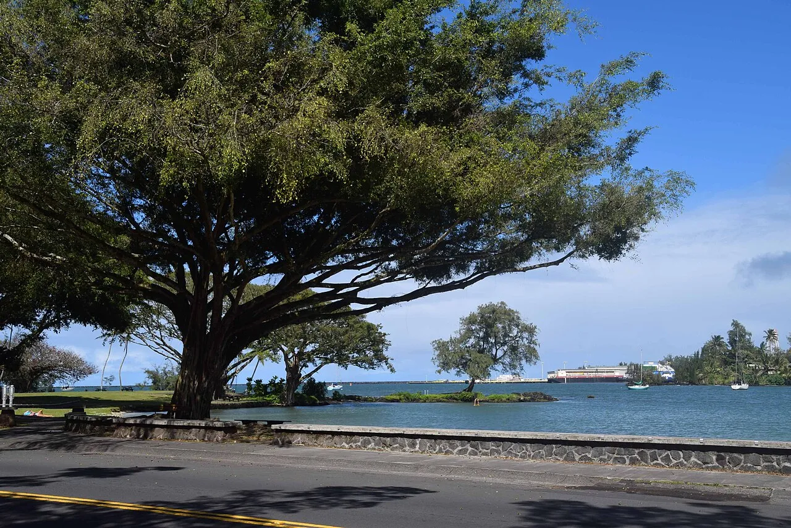
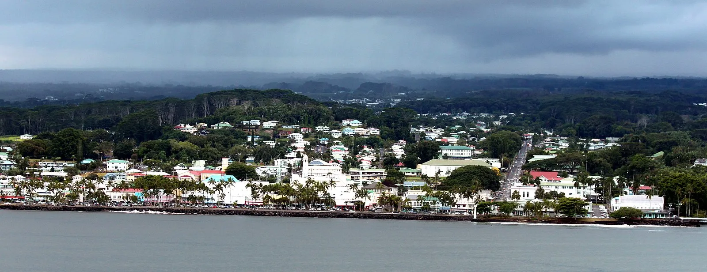
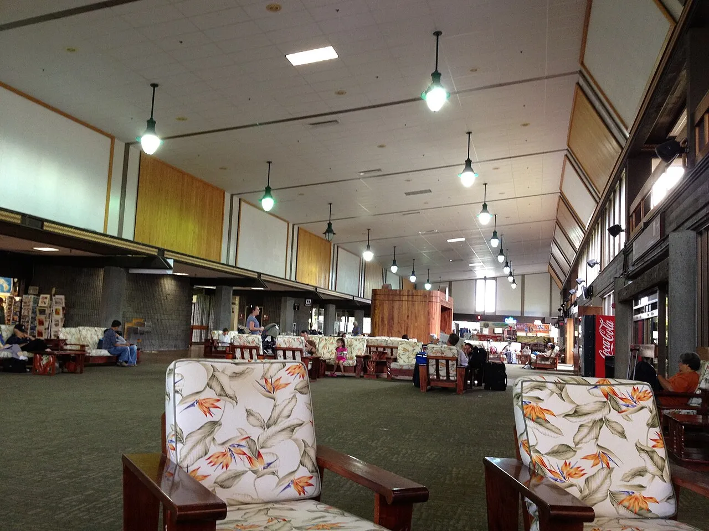
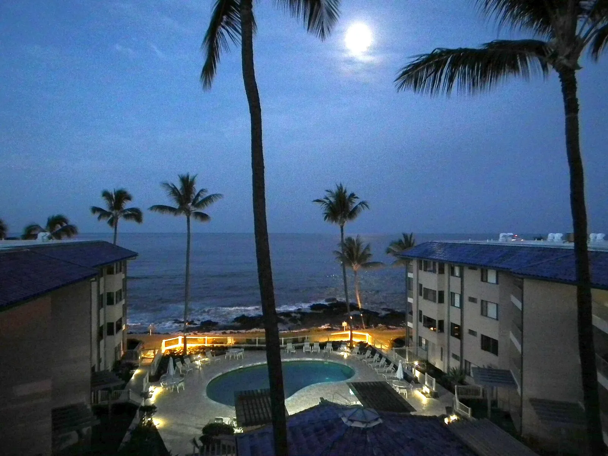

Photo: Wikimedia Commons (CC BY-SA)
Last reviewed: February 2026
Weather & Best Time to Visit
My Logbook: Where the Earth Still Breathes

We docked at Hilo just after dawn, and I stood on the upper deck watching the Big Island materialize through a curtain of soft rain — green cliffs rising from a crescent bay so lush it looked painted. I had read about Hilo before we arrived: the sugar boom prosperity of the 1800s, the devastating tsunamis of 1946 and 1960 that killed dozens and nearly erased the town, the quiet, stubborn rebuilding that chose authenticity over resort gloss. But nothing I had read prepared me for the feeling of stepping onto ground that is still being made. This is the county seat of Hawaii County, gateway to Kilauea — the world's most active volcano — and forces older than any city hum beneath your feet from the moment you arrive.
Photo Gallery



Image Credits
- Hero and port photographs: Wikimedia Commons — Creative Commons CC BY-SA licenses
- Gallery photographs: Wikimedia Commons — Creative Commons CC BY-SA licenses
Images sourced from Wikimedia Commons under Creative Commons licenses.